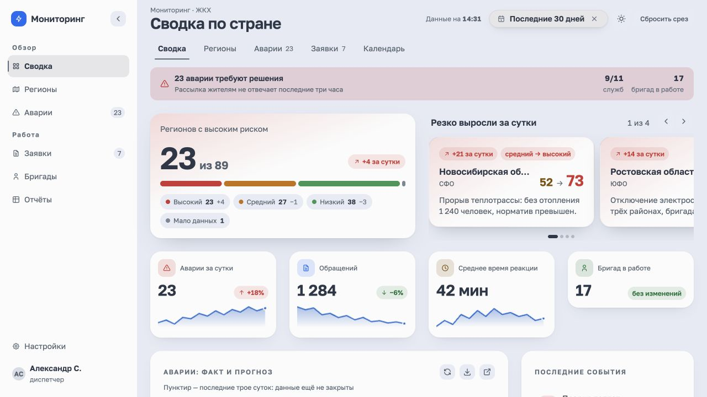
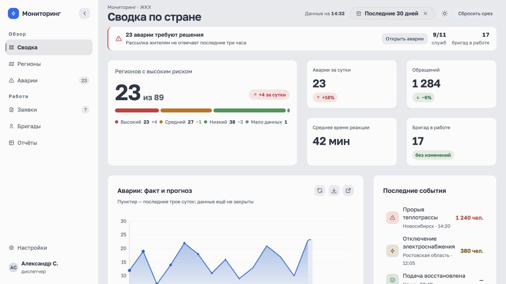
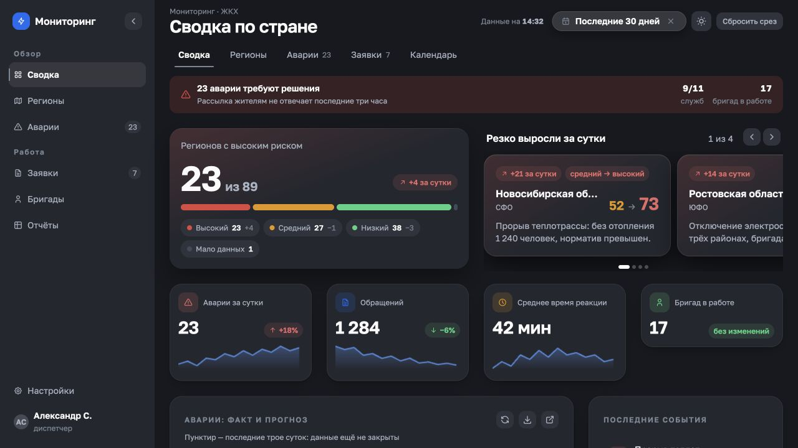
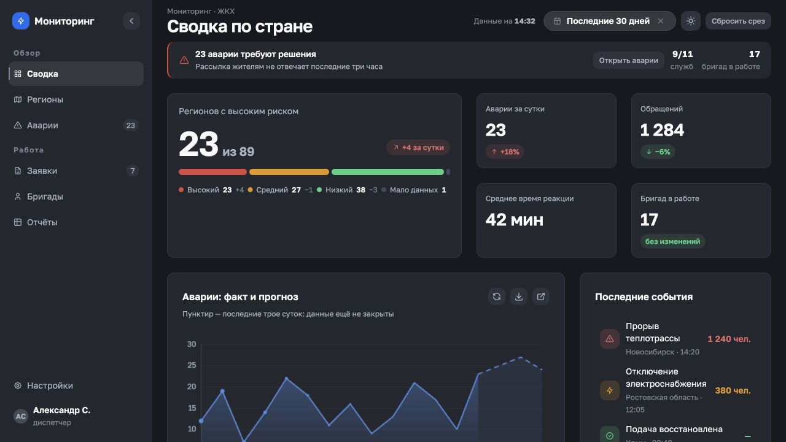
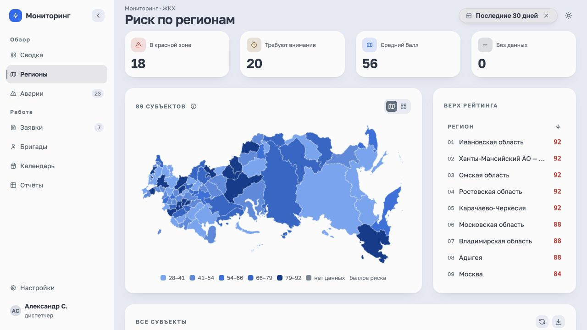
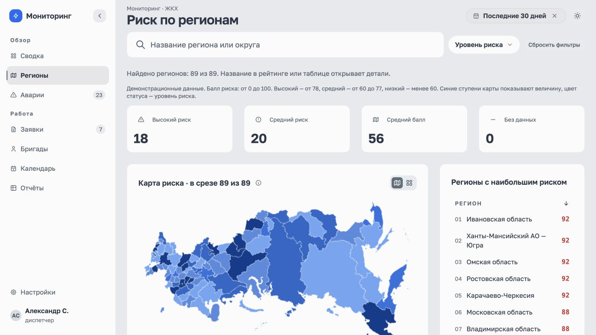
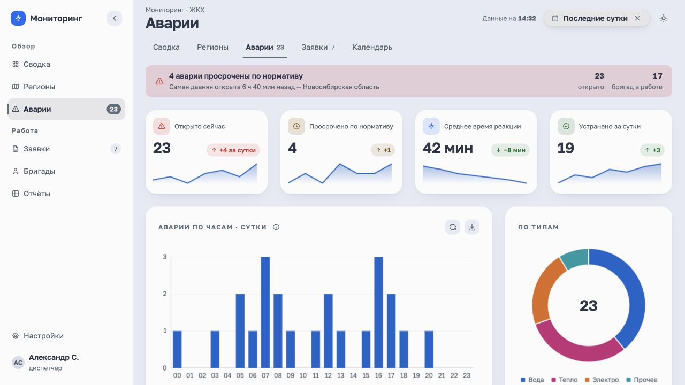
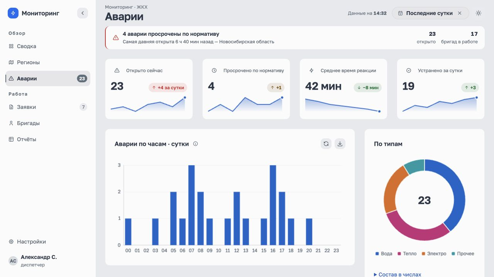
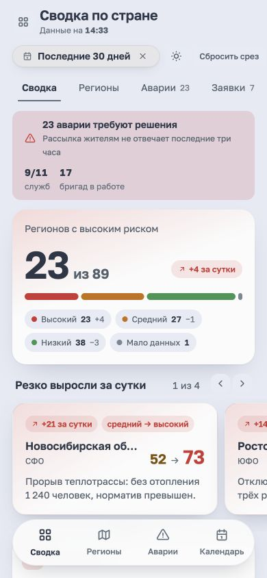
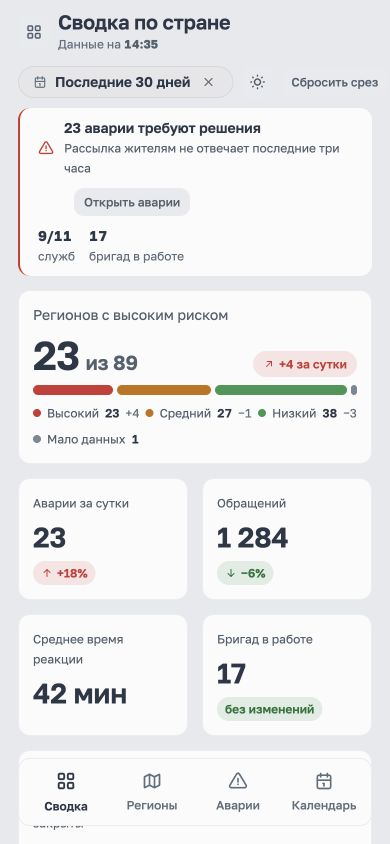

Утверждённое направление: спокойный точный рабочий инструмент. Нейтральные поверхности, сильная типографика, полные названия, цвет у данных и исключений.










Экспертный визуальный разбор. Скриншоты демонстрационных данных; результаты пользовательского исследования не заявляются.